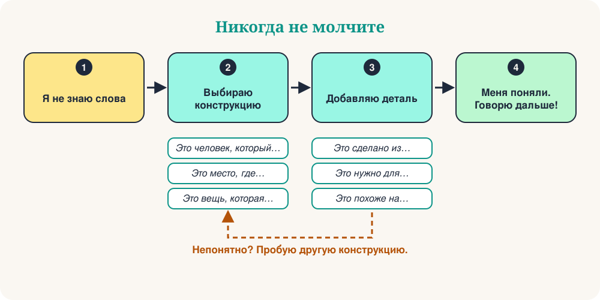

Вы на рынке. Хотите попросить зарядку, но слово пропало. Мозг говорит: переведи! Есть способ лучше. Не ищите потерянное слово. Опишите его.
Это настоящий навык, и носители языка тоже им пользуются. С помощью 10 готовых конструкций можно описать человека, место, предмет или момент. Часто собеседник сам подсказывает слово. И вы продолжаете говорить.

10 готовых конструкций
Учите конструкцию, а не слово. Прочитайте пример вслух, потом попробуйте ту же конструкцию с новым словом.
| # | Конструкция | Пример | Чтобы описать |
|---|---|---|---|
| 1 | Это человек, который… | Это человек, который учит детей. | человека (учитель) |
| 2 | Это место, где… | Это место, где покупают еду. | место (рынок) |
| 3 | Это вещь, которая… | Это вещь, которая показывает время. | предмет (часы) |
| 4 | Это то, чем… | Это то, чем пишут. | инструмент (ручка) |
| 5 | Это время, когда… | Это время, когда люди спят. | момент (ночь) |
| 6 | Это день, когда… | Это день, когда люди празднуют. | особый день (праздник) |
| 7 | Например… | Я люблю спорт. Например, футбол и теннис. | идею: привести примеры |
| 8 | Это значит… | «Огромный» — это значит «очень большой». | слово: объяснить проще |
| 9 | Это похоже на… | Это похоже на маленький компьютер. | внешний вид: сравнить |
| 10 | Как сказать… по-русски? | Как это сказать по-русски? | любое слово: попросить помощи |
В реальной жизни
Официант улыбается и приносит вам ручку.
Context: В кафе вы хотите подписать счёт.
Собеседник отвечает: «Рынок? Это через две улицы.»
Context: В новом городе вы ищете рынок.
Друг смеётся: «Банан!»
Context: На вечеринке вы забыли слово.
10 фраз-спасателей
Это небольшие добавки. Ставьте их после конструкции, чтобы дать больше деталей.
| # | Фраза | Пример |
|---|---|---|
| 1 | Это вид… | Это вид животного. |
| 2 | Это сделано из… | Это сделано из дерева или металла. |
| 3 | Это нужно для… | Это нужно для путешествий. |
| 4 | Это противоположно слову… | Это противоположно слову «дорогой». |
| 5 | Это звучит как… | Это звучит как музыка. |
| 6 | У этого есть… | У этого есть четыре колеса. |
| 7 | Это что-то вроде… | Это что-то вроде машины. |
| 8 | Это из… | Это из Италии. |
| 9 | Я не знаю слова, но… | Я не знаю слова, но этим готовят. |
| 10 | Повторите, пожалуйста. | Повторите, пожалуйста, помедленнее. |
Метод из 3 шагов
Опишем зонт, не называя слова:
- Категория: Это вещь, которая защищает.
- Функция: Это нужно, когда идёт дождь.
- Деталь: Это похоже на маленькую крышу.
Три короткие фразы. Собеседник говорит «Зонт!», и разговор продолжается.
Избегайте 4 ловушек
Быстрый тест
❓ Вы забыли слово «пекарня». Какая фраза подойдёт лучше всего?
«Это место, где…» — идеальная конструкция для мест. Собеседник слышит «хлеб» и «место»: пекарня!
❓ Какая фраза описывает «ножницы»?
Ножницы — это инструмент, поэтому подходит «Это то, чем…».
❓ Друг говорит: «Это противоположно слову “дорогой”». Какое это слово?
Противоположность слова «дорогой» — «дешёвый». Отличный способ объяснять прилагательные!
Ваша практика на 5 минут
- Оглянитесь и выберите 5 предметов.
- Опишите каждый одной конструкцией, не называя слово.
- Добавьте одну фразу-спасатель к двум самым трудным.
- Запишите себя на телефон и послушайте свой голос.
- Завтра повторите с 5 новыми предметами.
Итог
Беглость — это не знание всех слов. Это умение никогда не молчать. Учите конструкции, добавляйте деталь и продолжайте говорить.
“Опишите это. Не переводите.”